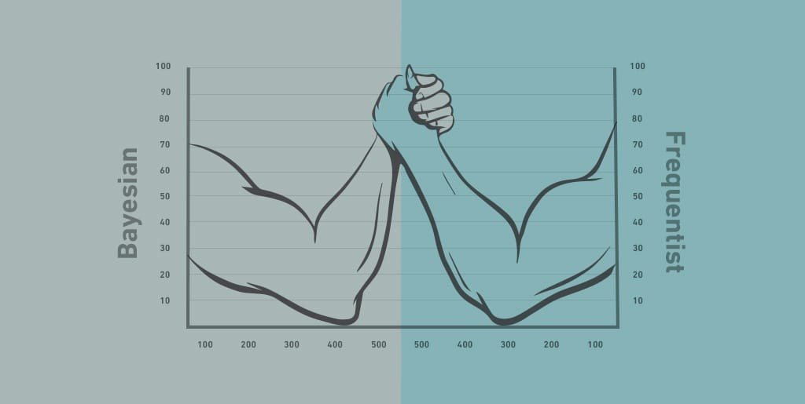

The most important questions of life are indeed, for the most part, really only problems of probability.
Way to Begin
While Ben Franklin is running around flying kites, Thomas Bayes is figuring out how to make educated mathematical guesses in situations where you do not have that much to go on, like possibly the probability that a guy name ‘X’ exists. But then Bayes dies before He is having a chance to tell anyone what he’s been up to. Soon after, his philosopher buddy, Richard Price, discovers Bayes’ notebooks while digging around his apartment, looking for free swag. Price is a pretty smart guy, so he instantly recognizes the genius of his pal’s theory. In 1763, he cleans up the math and publishes it in an obscure journal before using it to revolutionize the insurance business, where they need probabilities to figure out how much to rip you off. Fast forward to 1812, while the US and England are at it again, a French guy named Pierre-Simon Laplace developed Bayes’ theory into something more usable, which becomes known as conditional probability. It lets you update your guesses with any new facts that might come your way.
Developing Mathematical Guess
Say the probability of getting dengue fever while visiting the Amazon Rainforest for a week is 1 in 10,000 or 0.01%. You go to Amazon Rainforest to come home, and to be safe, take a test that is 99.9% accurate in detecting the virus. Your test comes back positive. You start to freak out, saying goodbye to loved ones, writing out your will and are about to adopt new religion when you take a second Bayesian look at the results. Remember for every one person with the virus, there are 9,999 people without it, which means that even a robot programmed to always spit out a negative test result, regardless of who’s taking the test, would still guess correctly 99.99% of the time. Being accurate 99.9% of the time, then isn’t really that impressive? what you really need to figure out is how accurate that test is when it spits out a positive result. When this one person with the virus takes a test, chances are 99.9% that it will be accurate. Out of the 9,999 people without the virus taking the test, 99.9% of them will get an accurate test result, which translates to 9,989 people. That means that the remaining 10 people will be inaccurately diagnosed, testing positive for dengue fever when they don’t actually have it. So out of the 11 people testing positive for the dengue virus, only 1 of them actually has it. It means that the chances your positive test result is right are only 1 in 11, or 9%, not 99.9%.
Now swap dengue fever with HIV, and you are looking at an actual, real-life example have found itself. In case we take the help of conditioning rather Conditional Probability works pretty well, and can literally save your life too.
Controversy

But the big thinkers of the day are not impressed with the phrase “works pretty well”. “They are all about frequentist probability, a more popular approach that claims that the only way you can really know the odds is to have lots of hard, objective data that backs you up. Let’s say you flip a coin once and it lands head. Based on that, you might assume it is always going to land heads, but that would be pretty stupid. We all know that the more times you flip a coin, the closer it is going to get to the landing heads just half the time. That is the whole point of frequentist probability. Flip the coin enough times and you will have good enough data to take on Vegas.
Bayesian probability is like shooting an arrow half blindfolded and hoping you hit the target. But most of the time, that’s exactly where you find yourself, needing an answer without having much to go on. That’s why World War II hero Alan Turing was that nerdy British guy who dreamed of computers way before Steve Jobs did. He used Bayesian probability to crack top-secret transmissions, some of them sent from Der Fuhrer himself. Despite this, the frequentists still think Bayesian is lame. And the rivalry continues deep into the 20th century.
But then, in the 1980s, people had been trying to make artificial intelligence a reality since the ‘60s, programming computers with basic logic like, if x is true then y happens. That approach works fine as long as x is always true, but as you can guess, there are too many unknown variables in the real world to bring C-3PO to life. But then, in 1988, Judea Pearl jumpstarts AI with a new approach based on Bayes’ theory. So that is why in 2011, a computer called Watson beat a couple of humans answering questions on Jeopardy, it was Thomas Bayes running around inside Watson’s brain going if this is true, then that might be true, and if that other thing is true. Assigning probabilities to unknown truths was a controversial methodology, and Bayesian statistics only became widely accepted among statisticians in the last century. But now it is the basis for a wide variety of applications, from assigning authorship of the different Federalist Papers to discovering patterns in complicated biomedical data. Increasingly it is playing an important role in physicians’ clinical decision making. All of this came from work done after Bayes and the development of computers strong enough to do the heavy number crunching. For that reason, it is speculated that he never imagined the usefulness of the theorem named after him.
Reference:
J P Clero, Thomas Bayes. Essai en vue de résoudre un problème de la doctrine des chances (Paris, 1988).
Thomas Bayes’s essay towards solving a problem in the doctrine of chances, in E S Pearson and M G Kendall, Studies in the History of Statistics and Probability (London, 1970), 131-153.
S M Stigler, who discovered Bayes’s theorem? The American statistician 37 (1984), 290-296.